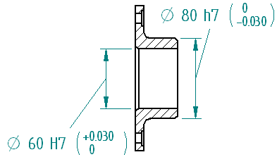

Fit dimensions
What are fit dimensions?
Fit dimensions define the tolerance specification for the proper fit between holes
and shafts. In Solid Edge, you can specify that a dimension is a fit dimension when
you set the Dimension Type=Class  on the command bar for the dimension. For more information, see Set the dimension display type
on the command bar for the dimension. For more information, see Set the dimension display type

Because the tolerance specification for the proper fit between holes and shafts is such a common and critical aspect in the design and manufacture of parts, international standards bodies established rule-based systems of tolerances for the Limits and Fits of holes and shafts. The terms hole and shaft also can refer to the space between two parallel faces of any part, such as the width of a slot, the thickness of a key, etc. Only distance dimensions are covered by the standards; the standards do not apply to angular dimensions.
Type options for fit dimensions
You can use the Type list on the command bar to specify the fit dimension display type.
|
Type |
Example |
|
Fit |
|
|
Fit, tolerance only |
|
|
Fit with tolerance |
|
|
Fit with limits |
|
|
Fit Hole/Shaft only |
|
|
Fit Hole/Shaft, tolerance only |
|
|
Fit Hole/Shaft with tolerance |
|
|
User-defined (Any user-defined text is valid) |
|


Formatting options for fit dimensions and tolerances
You can specify tolerance formatting options for fit dimensions by editing the dimension properties or by defining it in the dimension style. Refer to the following options on the Text tab, in the Tolerance Text group:
- Hole/Shaft
-
Three separator types are available to specify the layout of class fit hole/shaft dimensions with tolerance.
Use these options
For this layout
Separator
Vertical

Space
Vertical

Slash
Horizontal

- Position
-
Use these options
To get this layout
Bottom
Tolerance aligned to the bottom of the dimension text.

Center
Tolerance center-aligned with the dimension text.

Top
Tolerance aligned to the top of the dimension text.

- Align to
-
The following options are available to specify alignment of the upper tolerance value with the lower tolerance value:
-
Decimal point
-
Sign
-
- Use tolerance text size for combined tolerance text values
-
When upper and lower tolerance values are the same, specifies that the combined values are displayed using the tolerance text size entered in the Size box.
Example:
- Inhibit display of 0.0 values for automatic fit tolerances
-
Controls whether zero value tolerances are displayed or hidden.

You also can set this option for an individual dimension using the Properties command, or you can set it for all dimensions using the Styles command.
Fit dimension ASCII text files
Three ASCII text files are available that provide support for ANSI and ISO fit dimension standards. You can use these text files to automatically define the limit or fit for dimensions with different class sizes.
-
SE-LimitsAndFitsTableANSIinch.txt
-
SE-LimitsAndFitsTableANSIMetric.txt
-
SE-LimitsAndFitsTableISO.txt
By default, the files are located in the Solid Edge Preferences folder. You can instruct Solid Edge to look for these files in a different folder, including a folder on another machine on the network using the File Locations tab in the Solid Edge Options dialog box.
If you edit these files, save a copy of the files before you uninstall Solid Edge.